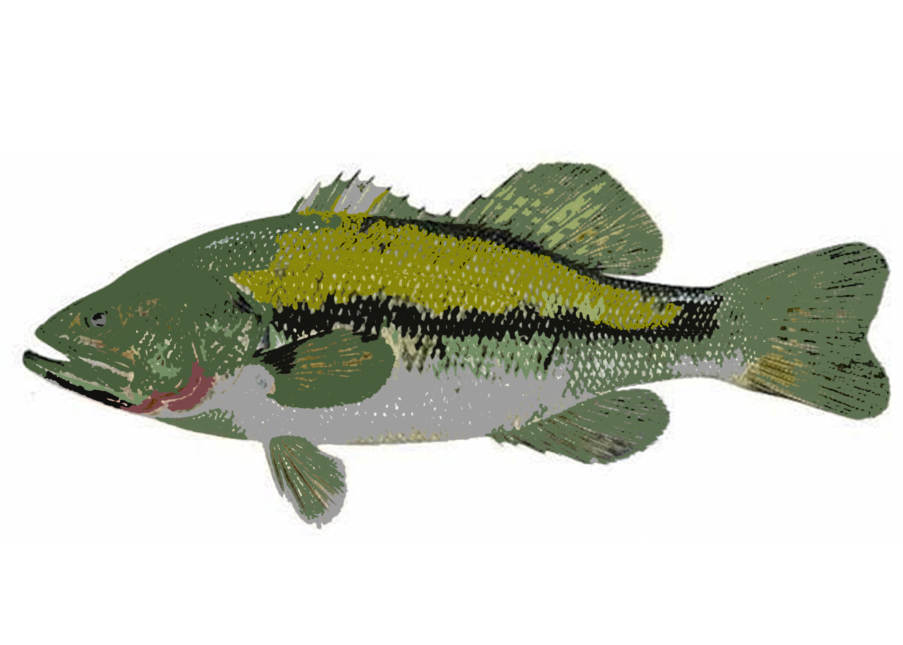

Data-Bass
By Russell Olson

Artist Statement: My decision to use largemouth bass data was a simple decision. Students were given the task to find data sets and the first two I thought of were fishing and my bank information. I wasn't too comfortable throwing my bank information into a dataset for the public to see, leaving me with the largemouth bass data which gave me a surplus of options on how I can complete this project. I looked for flaws in the website of where I got my data from and noticed there were no filter options. Ultimately I decided that this would be the purpose of my project and added filter buttons and color coding.